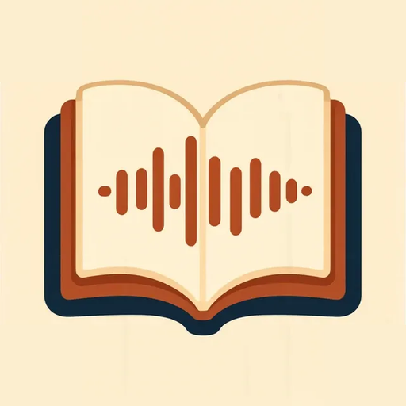

Голос семьиVoice of the Family
Voice of the Family · книга воспоминанийA voice interview and a printed memory book
Приложение само разговаривает с мамой, папой или бабушкой — по плану 12 глав жизни, от детства и дома до наших дней и потомков, 109 вопросов с подсказками для интервьюера. Вопросы озвучиваются вслух, ответы слушаются голосом, ИИ задаёт живые уточнения и бережно ведёт по главам. Каждая встреча раскладывается на истории: тексты можно поправить, пометить избранное, приложить фото. Кнопка «Собрать книгу» генерирует PDF с обложкой, посвящением и оглавлением — на печать или в семью. По желанию ИИ перепишет главу связным рассказом от первого лица. Работает офлайн, без регистрации и рекламы; данные живут только на вашем устройстве, а резервная копия — локальный ZIP, который можно отправить себе.The app talks to your mom, dad or grandma itself — following a plan of 12 life chapters, from childhood and home to our days and descendants, 109 questions with prompts for the interviewer. Questions are spoken aloud, answers are heard by voice, the AI asks warm follow-ups and gently guides the chapters. Each meeting breaks down into stories: edit the texts, mark favourites, attach a photo. The "Assemble the book" button generates a PDF with a cover, dedication and table of contents — to print or to send to the family. On request the AI rewrites a chapter as a first-person story. Works offline, with no sign-up and no ads; data lives on your device only, and the backup is a local ZIP you can send to yourself.
СкачатьDownload
Официальные магазины. Если кнопка неактивна — публикация в процессе.Official stores. If a button is disabled, publishing is in progress.
Технические вопросы — appcreators.technolab@ya.ruTechnical questions — appcreators.technolab@ya.ru
СкриншотыScreenshots
Скриншоты появятся вместе с публикацией в магазинах.Screenshots will appear together with the store release.
ВозможностиFeatures
Голосовое интервью с близкими — бесплатно, без регистрации и рекламы.A voice interview with your loved ones — free, with no sign-up and no ads.
Как это работаетHow it works
Три шага от установки до книги в руках.Three steps from install to a book in your hands.
Имя, родство, год рождения, где вырос(ла) — и день с временем еженедельной встречи. Регистрация не нужна.Name, kinship, birth year, where they grew up — and the day and time of the weekly meeting. No sign-up needed.
Принесите телефон герою и нажмите «Начать встречу». 15–20 минут: приложение говорит вслух, слушает голосом, задаёт уточнения.Bring the phone to the hero and press "Start the meeting". 15–20 minutes: the app speaks aloud, listens by voice, asks follow-ups.
Поправьте истории, пометьте избранное, попросите пересказ — и кнопка «Собрать книгу» соберёт PDF для печати и семьи.Polish the stories, mark favourites, request a retelling — and "Assemble the book" builds a PDF for printing and the family.